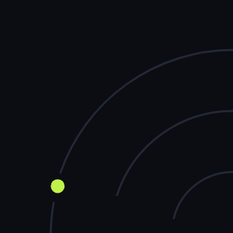

| Notas · Sep 2026 |
|
● Notas de captación Tres ideas que este mes movieron citas.Sin teoría: lo que vimos funcionar (y fallar) en clínicas, gimnasios y centros de estética. |  |
|
| |
Hola, {{nombre}}. Esta es la carta mensual de Oryzz: tres ideas, cinco minutos de lectura y ninguna promesa milagro. |
| | | ● | Contestar en 5 minutos vale más que otro anuncioQuien escribe a las 21:40 y recibe respuesta a la mañana siguiente ya ha pedido precio en otros dos sitios. Lo vemos cada mes: casi nunca faltan contactos; lo que pasa es que se enfrían. Para esta semana: mira cuánto tardaste en responder los últimos diez mensajes de WhatsApp o del formulario. Si pasa de una hora, un asistente puede hacer la primera pregunta y proponer hora por ti. |
|
| | | ● | ChatGPT ya recomienda negocios de tu zona. ¿Te nombra a ti?Cada vez más gente pregunta a ChatGPT, Gemini o Perplexity «qué fisio me recomiendas en Valencia» en lugar de buscar en Google. Las respuestas salen de reseñas, fichas y webs que esos modelos pueden leer. Prueba rápida: hazle esa pregunta con tu servicio y tu ciudad. Si no sales, empieza por lo básico: ficha de Google completa, servicios con precio orientativo en tu web y reseñas que nombren el tratamiento concreto. |
|
| | | ● | La reseña se pide en el mostrador, no una semana despuésEl mejor momento para pedir una reseña es justo cuando el cliente dice «qué bien ha ido». Un correo a los siete días llega tarde y compite con todo lo demás. En recepción funciona una placa NFC: el cliente acerca el móvil y se abre directamente la pantalla para valorar. Es lo que hace Oryzz Tap. |
|
|
¿Miramos tu caso? |
En 30 minutos revisamos cómo te llegan hoy los clientes y dónde se pierden. Sales con un diagnóstico, no con un presupuesto. |
|
Hasta el mes que viene, Juan y David Socios de Oryzz |
|
Oryzz · Sistemas que captan clientes. oryzz.com · Instagram · LinkedIn Recibes estas notas porque te suscribiste en oryzz.com. ¿Prefieres no recibir más estas notas? Darte de baja es inmediato. {{direccion_postal}} |
|